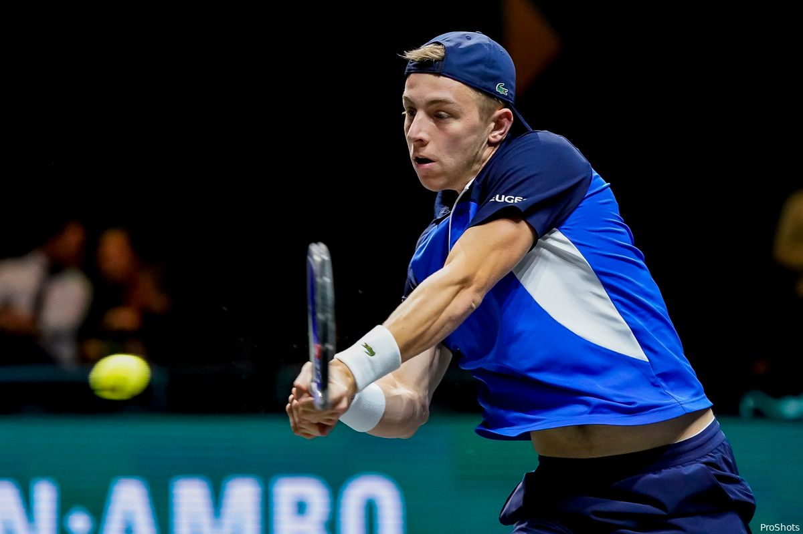

Bij het ABN AMRO Open zit je boven op het tennis. Toptennis, want sinds 1974 stonden er talloze legendes op de baan in Rotterdam Ahoy. Bij je bezoek aan het ATP-tennistoernooi zie je niet alleen de tennis wereldtop strijden om de titel van dichtbij: het is een complete dag uit! Van tennis clinics, meet & greets met jouw favoriete tennissers, tot shops en heerlijke restaurants. Naast toptennis is er dus voor iedereen wel wat te beleven op het ABN AMRO Open in Rotterdam Ahoy! 